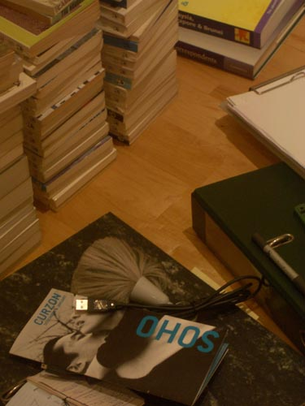
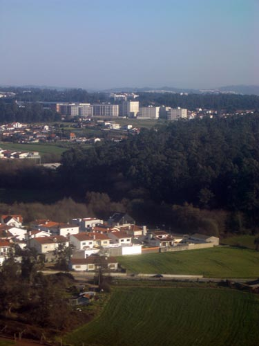
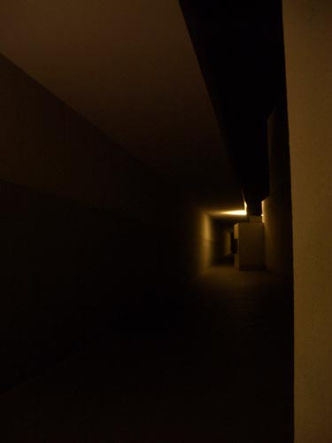

| < | > |
| Porto | [2005-02-08 23:01] |
 João had been away for ten days working on his show. I'd been spending my free time scanning the covers of my Panda books. Taking Friday off I flew to Porto for the opening.  From the air the human world looks so neatly laid out, as if care and sanity ruled the Earth. I spent most of the flight lost in white ripples visualizing vast PDF files of repetitive text with the occasional interruption of interest. I've decided to read everything by Gertrude Stein. I wonder how many people have done that. I'd planned to have some fun with these two, but as it turned out this was the only time I managed it. I'd retreated to the 11th floor to fix the button on my jacket before taking the taxi to the museum.  |
|
|
|